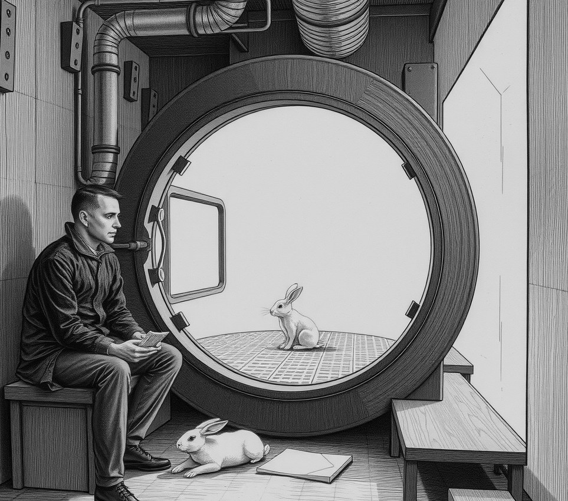

GALE GATE . 5 October 2415

Kassim Mir sits outside the Lock Seven quarantine bay every afternoon while his rabbit completes forty days of biosecurity isolation.
Agricultural officers classified his signature vanishing trick as unlicensed live-animal transit between dome sectors. Under colony health rules, any livestock moving through unpressurised space must undergo standard scrubbing before returning to the stage.
Mir explained that the animal simply drops into a felt pocket beneath the wooden table. Inspector Naila Ortiz rejected the explanation in her official incident report.
"The animal enters the hat and vanishes," Ortiz wrote. "Until Mr Mir provides an air-pressure log proving it stayed inside the hall, we must treat the trick as open-air transit."
Mir now performs only six times a year, his schedule dictated entirely by the rabbit's isolation schedule. Other local acts have adapted to the strict atmosphere rules. A juggler swapped wooden pins for sealed water pouches after inspectors marked high throws as unmetered cargo movement across sector lines.
Mir remains patient.
"I am training him to hold a tiny barometer in his teeth," Mir said. "If he can log the pressure inside the pocket, we can skip the quarantine next time. But he keeps eating the strap."